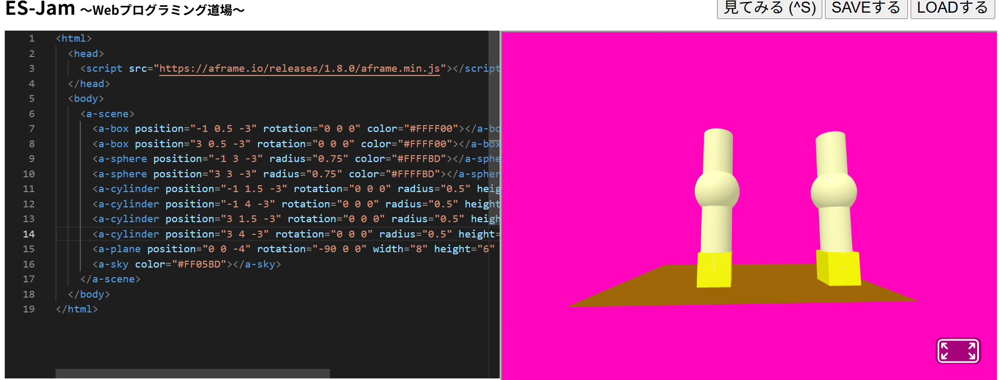
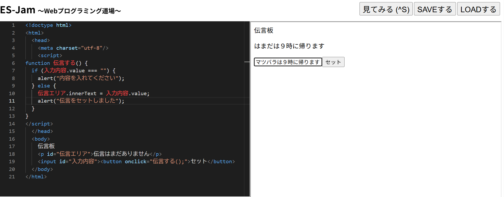

３週目のレポート ： 公大高専１年実習I-1
4b班35番 いんどかれ
第3週目
3-1 JavaScript体験：VR空間を作る

自作した３次元空間
1.内容
webプログラミング道場とA-frameを使ってをオリジナルの三次元空間を作る
色や位置、回転などを変えてオリジナルな３次元空間を作ることができる
2.感想
その物体のコードを複製することで３次元空間にある物体も複製することができ、よりオリジナルにすることができた
３Dモデリングソフトとやり方は違うが簡単に編集することができた
3-2 JavaScript体験：伝言プログラムを作る

伝言板
1.内容
webプログラミング道場とjavascriptを用いて伝言板のアプリを作った
htmlでのアプリコードの書き方function,if,elseなどの使い方を知った
2.感想
webアプリを作ったことがなかったけれど、簡単に伝言アプリを作ることができた
伝言アプリという簡単なものだが楽しく作ることができた
各ページへのリンク
1週目のレポート
2週目のレポート
3週目のレポート
私のホームページ